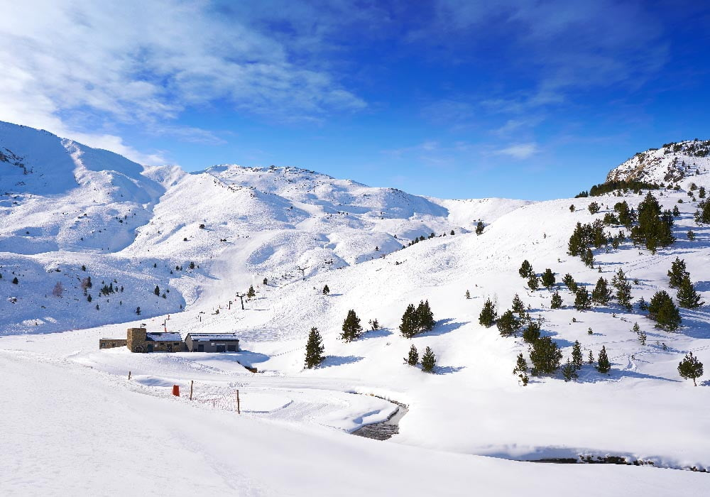

Estación de Esquí de Cerler
La estación de esquí de Cerler se encuentra en el corazón del Pirineo aragonés, dentro del valle de Benasque. Es conocida por ser una de las estaciones con mayor altitud en el Pirineo español, alcanzando los 2,630 metros en su punto más alto, lo que garantiza una excelente calidad de nieve durante toda la temporada.
Cerler ofrece una gran variedad de pistas para todos los niveles, desde principiantes hasta expertos, con un total de 77 km esquiables distribuidos en más de 60 pistas. Además, cuenta con modernos sistemas de remontes y excelentes servicios para disfrutar de una experiencia de esquí completa.
Los esquiadores pueden disfrutar de impresionantes vistas de los picos más altos de los Pirineos, incluyendo el Aneto, el Posets y el Perdiguero. La estación también cuenta con una zona especial para el snowboard y el freestyle, así como con varias rutas de senderismo y actividades para no esquiadores.
Con un ambiente acogedor y la tradicional hospitalidad aragonesa, Cerler es el destino perfecto para disfrutar de la nieve, la montaña y el encanto de uno de los valles más hermosos de España.
